专题03 数轴上的动点探究问题的六种模型

目录
题型一：数轴上单个动点问题 1
题型二：数轴上单个动点规律探究问题 4
题型三：数轴上的动点中求定值问题 6
题型四：数轴上双动点恒速运动问题 11
题型五：数轴上多动点恒速运动问题 17
题型六：数轴上中动点新定义型问题 20

题型一：数轴上单个动点问题
1.已知数轴上 、
、 两点对应的数分别为
两点对应的数分别为 、
、 ，
， 为数轴上一动点，对应的数为
为数轴上一动点，对应的数为 ，若点到、距离的比为
，若点到、距离的比为 ，则点表示的数为 ．
，则点表示的数为 ．
2.如图，在数轴上，点A表示的数是 ，点B表示的数为
，点B表示的数为 ，点P是数轴上的动点．点P沿数轴的负方向运动，在运动过程中，当点P到点A的距离与点P到点B的距离比是
，点P是数轴上的动点．点P沿数轴的负方向运动，在运动过程中，当点P到点A的距离与点P到点B的距离比是 时，点P表示的数是 ．
时，点P表示的数是 ．

3.阅读与思考
如图，一个点从数轴上的原点开始，先向右移动3个单位长度，再向左移动5个单位长度，可以看出，终点表示的数是 ．参照图中所给的信息，完成填空：
．参照图中所给的信息，完成填空：
已知A，B都是数轴上的点．
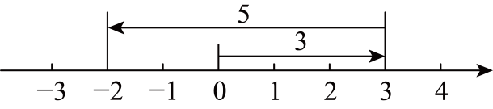
（1）若点A表示数 ．将点A向右移动5个单位长度至点
．将点A向右移动5个单位长度至点 ．则点表示的数是 ；
．则点表示的数是 ；
（2）若点A表示数2，将点A先向左移动7个单位长度，再向右移动 个单位长度至点
个单位长度至点 ，则点表示的数是 ；
，则点表示的数是 ；
（3）若将点B先向左移动3个单位长度，再向右移动6个单位长度，终点表示的数恰好是0，则点B所表示的数是 ．
4.如图，一个点从数轴上的原点开始，先向左移动 到达点，再向右移动
到达点，再向右移动 到达点，然后再向右移动
到达点，然后再向右移动 到达
到达 点，数轴上一个单位长度表示
点，数轴上一个单位长度表示 ．
．

(1)请你在数轴上标出、、三点的位置，并填空：A表示的数为_______，B表示的数为_______，C表示的数为______．
(2)把点到点的距离记为 ，则
，则 _____
_____ ，
，
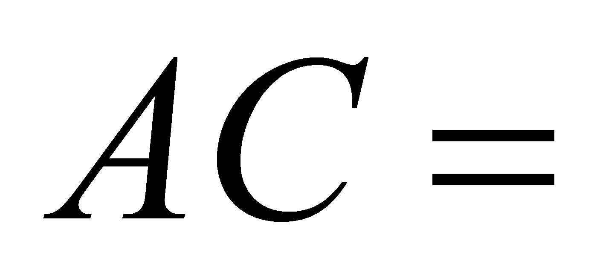
______；(3)若点从（1）中的位置沿数轴以每秒 匀速向右运动，经过多少秒使
匀速向右运动，经过多少秒使 ？
？
题型二：数轴上单个动点规律探究问题
5．在数轴上，点 表示原点，现将点
表示原点，现将点 从点开始沿数轴按如下规律移动：第一次点向左移动1个单位长度到达点，第二次将点向右移动2个单位长度到达点，第三次将点向左移动3个单位长度到达点
从点开始沿数轴按如下规律移动：第一次点向左移动1个单位长度到达点，第二次将点向右移动2个单位长度到达点，第三次将点向左移动3个单位长度到达点
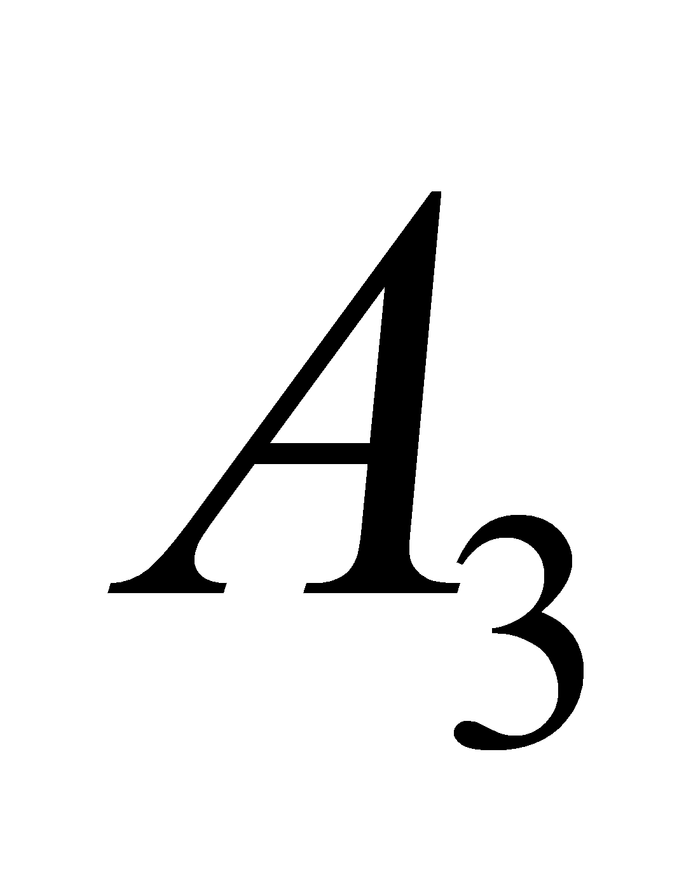
，第四次将点向右移动4个单位长度到达点 ，…，按照这种移动规律移动下去，第
，…，按照这种移动规律移动下去，第 次移动到点
次移动到点 ，当
，当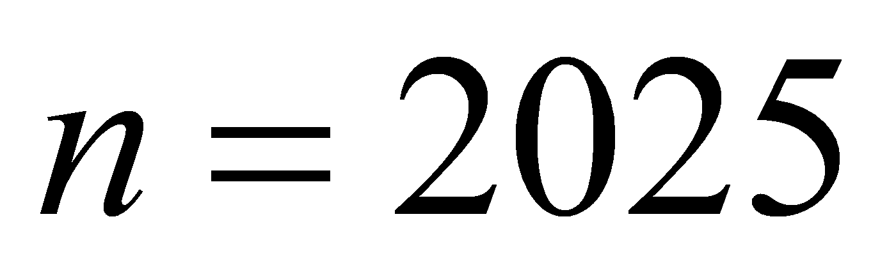
时，点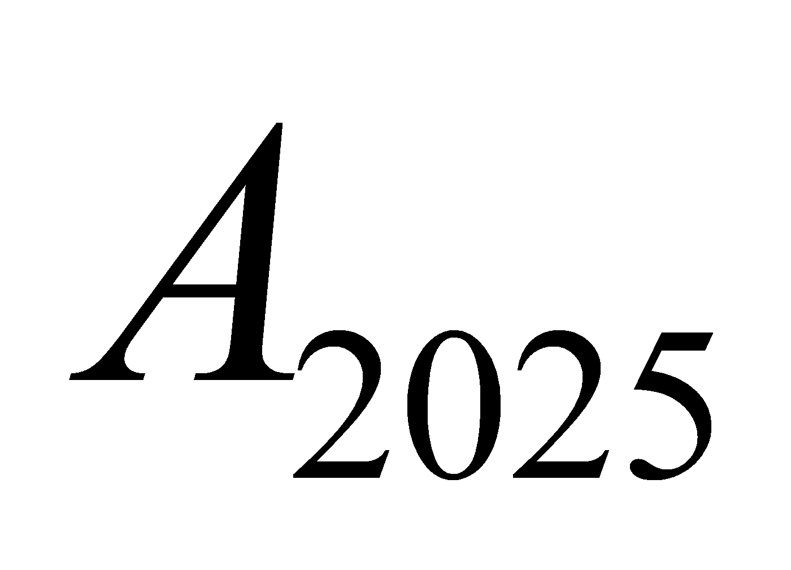
与原点的距离是 个单位．6．如图所示，数轴上O，A两点的距离为8，一动点P从点A出发，按以下规律跳动：第1次跳动到 的中点处，第2次从点跳动到
的中点处，第2次从点跳动到 的中点处，第3次从点跳动到
的中点处，第3次从点跳动到 的中点处，按照这样的规律继续跳动到点，
的中点处，按照这样的规律继续跳动到点， ，
， ，…，（
，…，（ ，n是整数）处，问经过这样2023次跳动后的点与
，n是整数）处，问经过这样2023次跳动后的点与
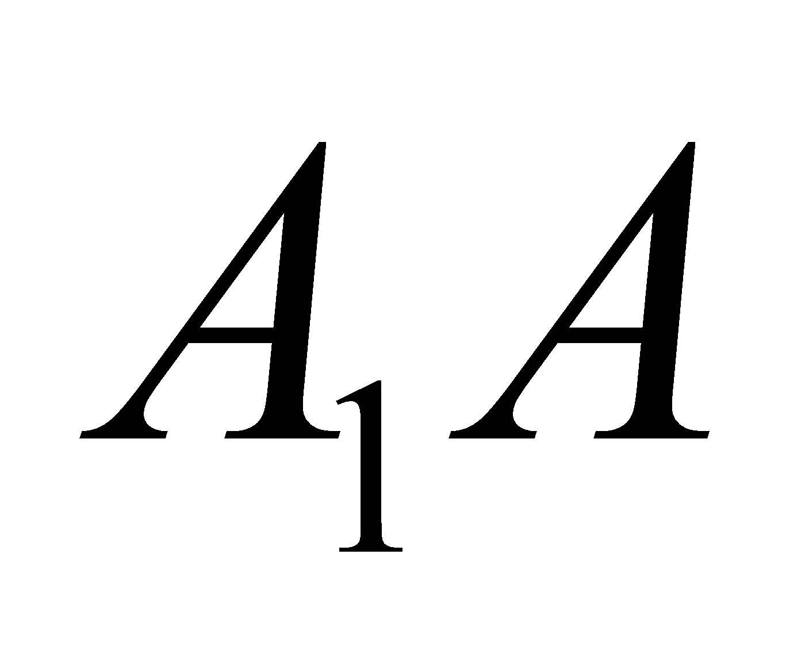
的中点的距离是 ．
7．在数轴上，点O表示原点，现将点从O点开始沿数轴如下移动，第一次点向左移动1个单位长度到达点，第二次将点向右移动2个单位长度到达点，第三次将点向左移动3个单位长度到达点，第四次将点向右移动4个单位长度到达点，按照这种移动规律移动下去，第n次移动到点，当 时，这时点与原点的距离是 个单位．
时，这时点与原点的距离是 个单位．
8．正六边形 在数轴上的位置如图所示，点
在数轴上的位置如图所示，点 对应的数分别为1和0，若正六边形绕顶点顺时针方向在数轴上连续翻转，翻转1次后，点
对应的数分别为1和0，若正六边形绕顶点顺时针方向在数轴上连续翻转，翻转1次后，点 所对应的数为2；按此规律继续翻转下去，数轴上数
所对应的数为2；按此规律继续翻转下去，数轴上数 所对应的顶点是 ．
所对应的顶点是 ．
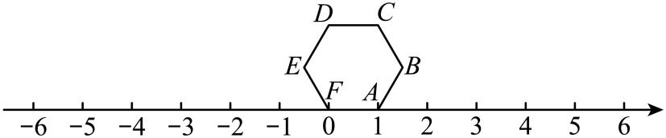
题型三：数轴上的动点中求定值问题
9．阅读下面的材料：
如图①，若线段 在数轴上，A，B点表示的数分别为a，b
在数轴上，A，B点表示的数分别为a，b ，则线段的长（点A到点B的距离）可表示为
，则线段的长（点A到点B的距离）可表示为 ．
．
请用上面材料中的知识解答下面的问题：
如图②，一个点从数轴上的原点开始，先向左移动1cm到达A点，再向左移动2cm到达B点，然后向右移动7cm到达C点，用1个单位长度表示1cm．

(1)请你在数轴上表示出 、
、 、
、 三点的位置，并直接写出线段
三点的位置，并直接写出线段 的长度；
的长度；
(2)若将点A向右移动 cm，请用代数式表示移动后的点表示的数？
cm，请用代数式表示移动后的点表示的数？
(3)若点B以每秒2cm的速度向左移动至点 ，同时点A，点C分别以每秒1cm和4cm的速度向右移动至点
，同时点A，点C分别以每秒1cm和4cm的速度向右移动至点
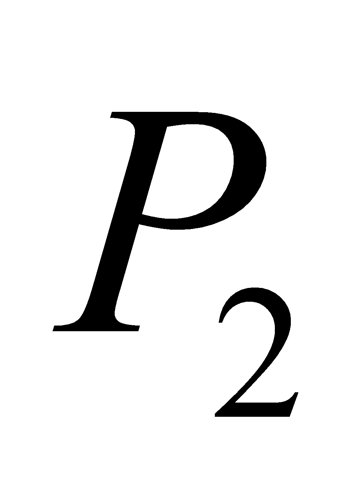
，点 ，设移动时间为t秒，试探索：
，设移动时间为t秒，试探索： 的值是否会随着t的变化而变化？请说明理由．
的值是否会随着t的变化而变化？请说明理由．10．如图所示，点A、B、C、D在数轴上对应的数分别为a、b、c、d，其中a是最大的负整数，b、c满足 ，且
，且 ．
．
(1) ____________；
____________； _____________；线段
_____________；线段 ____________；
____________；
(2)若点A以每秒3个单位长度的速度向左运动，同时点C以每秒5个单位长度的速度向左运动，设运动的时间为t秒，当A、C两点之间的距离为11个单位长度时，求运动时间t的值；
(3)若线段 和
和 同时开始向右运动，且线段的速度小于线段的速度．在点A和点C之间有一点M，始终满足，在点B和点D之间有一点N，始终满足
同时开始向右运动，且线段的速度小于线段的速度．在点A和点C之间有一点M，始终满足，在点B和点D之间有一点N，始终满足 ，此时线段
，此时线段 为定值吗?若是，请求出这个定值，若不是，请说明理由．
为定值吗?若是，请求出这个定值，若不是，请说明理由．
11．若点 在数轴上对应的数分别为
在数轴上对应的数分别为 ，其中
，其中 是最小的正整数，
是最小的正整数，
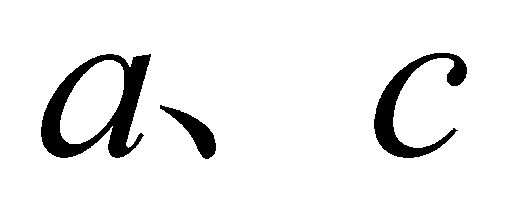
满足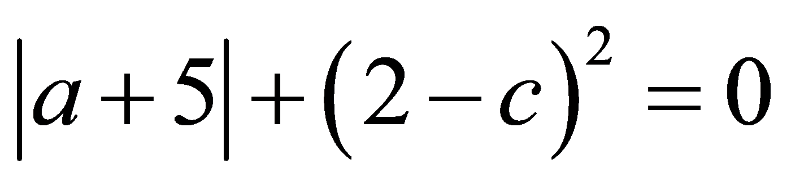
，请回答问题：
(1)请直接写出的值；
(2)在数轴上是否存在点 ，使得
，使得 ？若存在，求出点对应的数；若不存在，请说明理由；
？若存在，求出点对应的数；若不存在，请说明理由；
(3)若点同时开始在数轴上分别以每秒1个单位长度，每秒3个单位长度，每秒4个单位长度沿着数轴负方向运动．经过 秒后，是否存在常数
秒后，是否存在常数 ，使得
，使得 为定值？若存在，请求出的值以及这个定值；若不存在，请说明理由．
为定值？若存在，请求出的值以及这个定值；若不存在，请说明理由．
12．已知数轴上A，B，C三点对应的数分别为 、3、5，点P为数轴上任意一点，其对应的数为x．点A与点P之间的距离表示为
、3、5，点P为数轴上任意一点，其对应的数为x．点A与点P之间的距离表示为 ，点B与点P之间的距离表示为
，点B与点P之间的距离表示为 ．
．

(1)若 ，求x的值；
，求x的值；
(2)若 ，求x的值；
，求x的值；
(3)若点P从点C出发，以每秒3个单位的速度向右运动，点A以每秒1个单位的速度向左运动，点B以每秒2个单位的速度向右运动，三点同时出发．设运动时间为t秒，试判断： 的值是否发生变化？若不变化，求出这个定值，若变化，请说明理由．
的值是否发生变化？若不变化，求出这个定值，若变化，请说明理由．
题型四：数轴上双动点恒速运动问题
13.如图，数轴上的单位长度为1， 两点表示的数是互为相反数；
两点表示的数是互为相反数；

(1)点表示的数是______，点表示的数______．
(2)数轴上一个动点先向左移动2个单位长度，再向右移动5个单位到达点 ，若点表示的数是1，则点所表示的数是______．
，若点表示的数是1，则点所表示的数是______．
(3)在数轴上，点 为坐标原点，若点
为坐标原点，若点 点分别以2个单位长度/秒和0.5个单位长度/秒的速度向右运动，当两点同时运动时，设运动时间为
点分别以2个单位长度/秒和0.5个单位长度/秒的速度向右运动，当两点同时运动时，设运动时间为 秒
秒 ．
．
①点表示的数为______；点表示的数为______．（用含的式子表示）
②当为何值时，点点 点三点之间恰好有一个点到其他两个点的距离相等？
点三点之间恰好有一个点到其他两个点的距离相等？
14.如图，数轴的原点为，在数轴上有、两点，点对应的数是 ，点对应的数是1，动点、
，点对应的数是1，动点、 同时从、出发，分别以3个单位/秒和1个单位/秒的速度沿着数轴正方向运动，设运动时间为秒（
同时从、出发，分别以3个单位/秒和1个单位/秒的速度沿着数轴正方向运动，设运动时间为秒（ ）．
）．
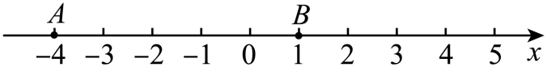
(1) 两点间的距离是 ；
两点间的距离是 ；
(2)当 时，动点对应的数是 ，动点对应的数是 ；
时，动点对应的数是 ，动点对应的数是 ；
(3)当运动时间为秒时，用含的代数式表示出点和点所对应的数；
(4)当 时，点是否为线段
时，点是否为线段 的中点？
的中点？
15.如图，点 均在数轴上，点所对应的数是，点在点的右边，且距点
均在数轴上，点所对应的数是，点在点的右边，且距点 个单位长度，点
个单位长度，点 是数轴上的两个动点．
是数轴上的两个动点．

(1)求出点所对应的数；
(2)当点到点的距离之和是 个单位长度时，求出此时点所对应的数；
个单位长度时，求出此时点所对应的数；
(3)若点分别从点出发，均沿数轴向左运动，点每秒运动 个单位长度，点
个单位长度，点 每秒运动
每秒运动 个单位长度．若点先出发秒后点出发，当两点相距个单位长度时，直接写出此时点分别对应的数．
个单位长度．若点先出发秒后点出发，当两点相距个单位长度时，直接写出此时点分别对应的数．
16.如图，已知点A，B，C是数轴上三点，O为原点．点C对应的数为6， ，
， ．
．
(1)求点A，B对应的数；
(2)动点P，Q分别同时从A，C出发，分别以每秒6个单位和3个单位的速度沿数轴正方向运动．M为的中点，N在线段 上，且
上，且
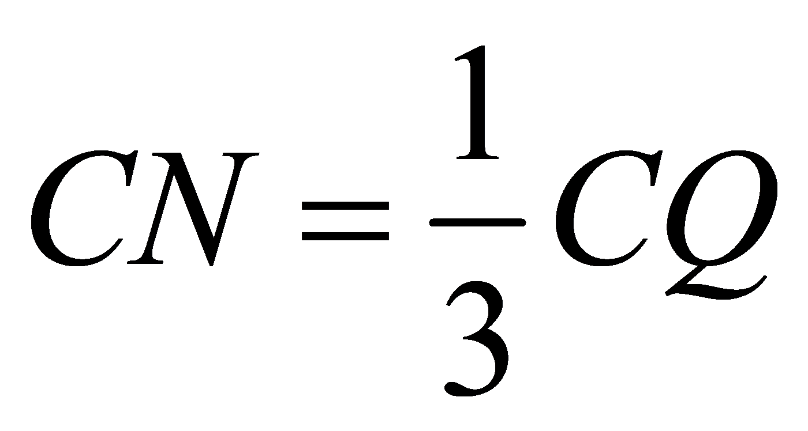
，设运动时间为 ．
．①求点M，N对应的数（用含t的式子表示）；
②t为何值时， ．
．
17.如图，已知点、、是数轴上三点，为原点．点对应的数为， ，
， ．
．
(1)则点对应的数是 ，点对应的数是 ；
(2)动点、分别同时从、出发，分别以每秒 个单位和个单位的速度沿数轴正方向运动．在线段上，且，在线段上，且
个单位和个单位的速度沿数轴正方向运动．在线段上，且，在线段上，且 ，设运动时间为．
，设运动时间为．
①求点、对应的数（用含的式子表示）
②猜想 的长度是否与的大小有关？如果有关请你写出用表示的代数式；如果无关请你求出的长度．
的长度是否与的大小有关？如果有关请你写出用表示的代数式；如果无关请你求出的长度．
题型五：数轴上多动点恒速运动问题
18．阅读：如图，已知数轴上有 、
、 、三个点，它们表示的数分别是
、三个点，它们表示的数分别是 ，
， ，
， ．到的距离可以用
．到的距离可以用 表示，计算方法：
表示，计算方法：
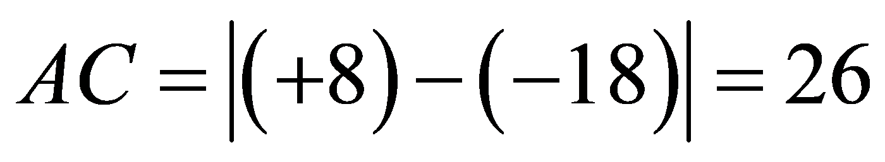
，或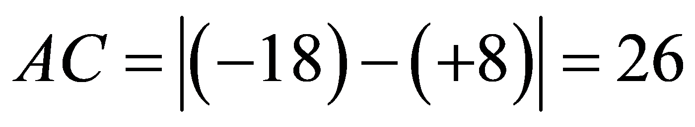
．根据阅读完成下列问题：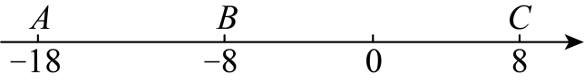
(1)填空： ，
， ．
．
(2)若点以每秒 个单位长度的速度向左运动，同时，点和点分别以每秒
个单位长度的速度向左运动，同时，点和点分别以每秒 个单位长度和
个单位长度和 个单位长度的速度向右运动，试探索：到的距离与到的距离的差（即
个单位长度的速度向右运动，试探索：到的距离与到的距离的差（即 ）的值是否随着时间
）的值是否随着时间 的变化而改变？请说明理由．
的变化而改变？请说明理由．
(3)现有动点 、
、 都从点出发，点以每秒个单位长度的速度向右移动，当点移动
都从点出发，点以每秒个单位长度的速度向右移动，当点移动 秒时，点才从点出发，并以每秒
秒时，点才从点出发，并以每秒 个单位长度的速度向右移动．设点移动的时间为秒（
个单位长度的速度向右移动．设点移动的时间为秒（ ），直接写出、两点间的距离
），直接写出、两点间的距离 （用含的代数式表示）．
（用含的代数式表示）．
19.已知数轴上两点A、B对应的数分别是6,−8，M、N、P为数轴上三个动点，点M从A点出发，速度为每秒2个单位，点N从点B出发，速度为M点的3倍，点P从原点出发，速度为每秒1个单位．
(1)若点M向右运动，同时点N向左运动，求多长时间点M与点N相距46个单位？
(2)若点M、N、P同时都向右运动，求多长时间点P到点M，N的距离相等？
(3)当时间t满足t1<t≤t2时，M、N两点之间，N、P两点之间，M、P两点之间分别有47个、37个、10个整数点，请直接写出t1，t2的值．
20．已知： 是最小的正整数，且
是最小的正整数，且 满足
满足
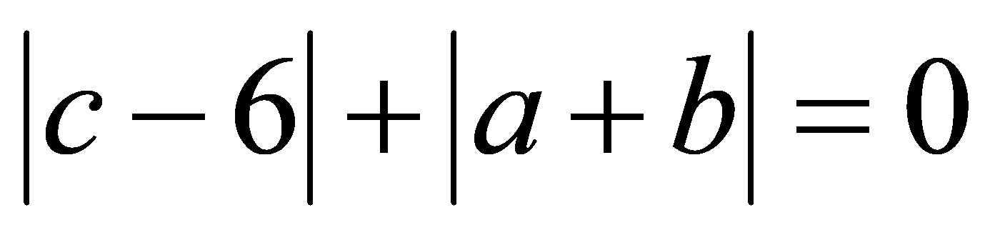
，请回答问题：
(1)请直接写出的值． ，
， ，
， ；
；
(2)所对应的点分别为 ，点P为一动点，其对应的数为x，点P在B、C之间运动时，请化简式子：
，点P为一动点，其对应的数为x，点P在B、C之间运动时，请化简式子：
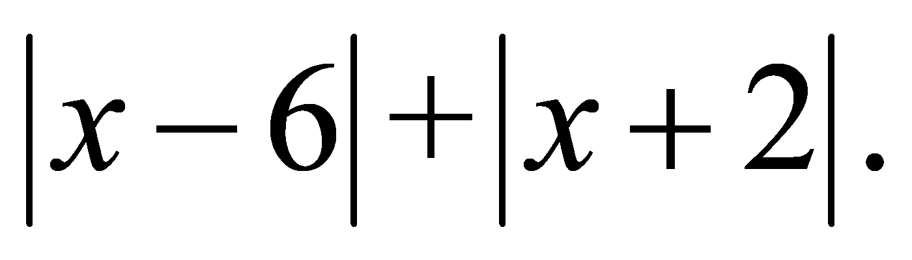
(3)在（1）（2）的条件下，点开始在数轴上运动，若点A以每秒
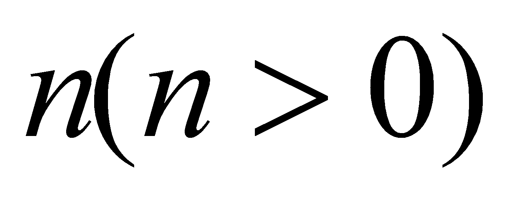
个单位长度的速度向左运动，同时，点B和点 分别以每秒
分别以每秒 个单位长度和
个单位长度和 个单位长度的速度向右运动，假设经过
个单位长度的速度向右运动，假设经过 秒钟过后，若点B与点之间的距离表示为
秒钟过后，若点B与点之间的距离表示为 ，点A与点B之间的距离表示为
，点A与点B之间的距离表示为 ．请问：
．请问： 的值是否随着时间的变化而改变？若变化，请说明理由；若不变，请求其值．
的值是否随着时间的变化而改变？若变化，请说明理由；若不变，请求其值．题型六：数轴上中动点新定义型问题
21．定义：若为数轴上三个不同的点，若点 到点的距离和点到点的距离的2倍的和为10，我们就称点C是
到点的距离和点到点的距离的2倍的和为10，我们就称点C是 的美好点，例如：点M、N、P表示的数分别为
的美好点，例如：点M、N、P表示的数分别为 、2、0．则点P到点M的距离是6，到点N的距离是2，那么点P是
、2、0．则点P到点M的距离是6，到点N的距离是2，那么点P是 的美好点，而点P就不是
的美好点，而点P就不是
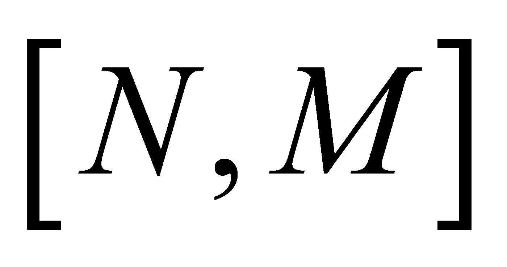
的美好点．
(1)若点 表示的数分别为
表示的数分别为
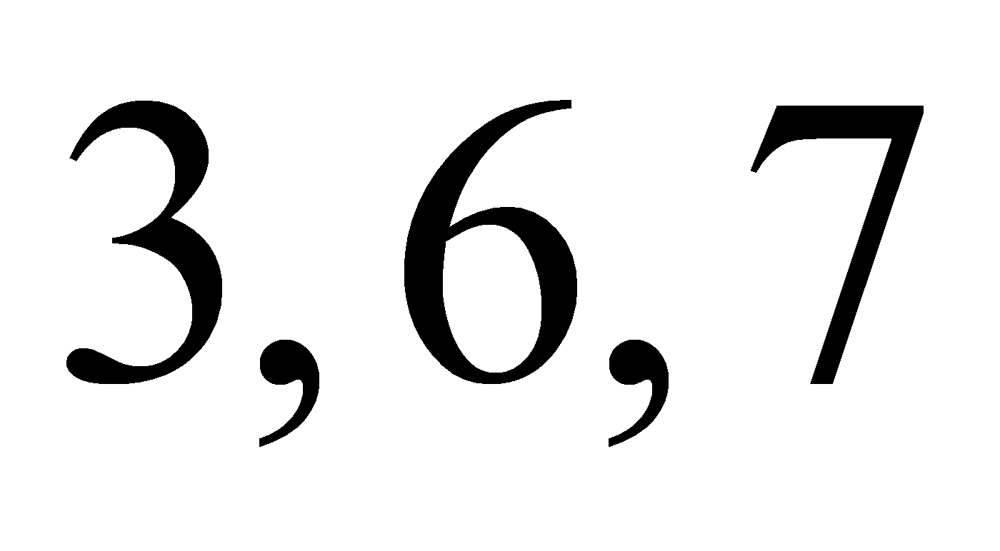
，则 是[ ， ]的美好点．（空格内分别填入）(2)若点 表示的数分别为
表示的数分别为
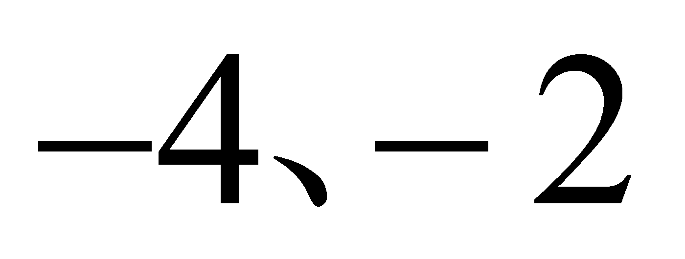
，且是的美好点，求点 表示的数．
表示的数．(3)如图，数轴上 三点分别表示的数为
三点分别表示的数为 、
、 、
、 ，点
，点 从点出发以每秒8个单位长度的速度沿数轴向左匀速运动，在点出发的同时，点从点出发以每秒2个单位长度向右匀速运动，当点到达点时，点
从点出发以每秒8个单位长度的速度沿数轴向左匀速运动，在点出发的同时，点从点出发以每秒2个单位长度向右匀速运动，当点到达点时，点 停止运动．直接写出
停止运动．直接写出 为何值时，点恰好为
为何值时，点恰好为
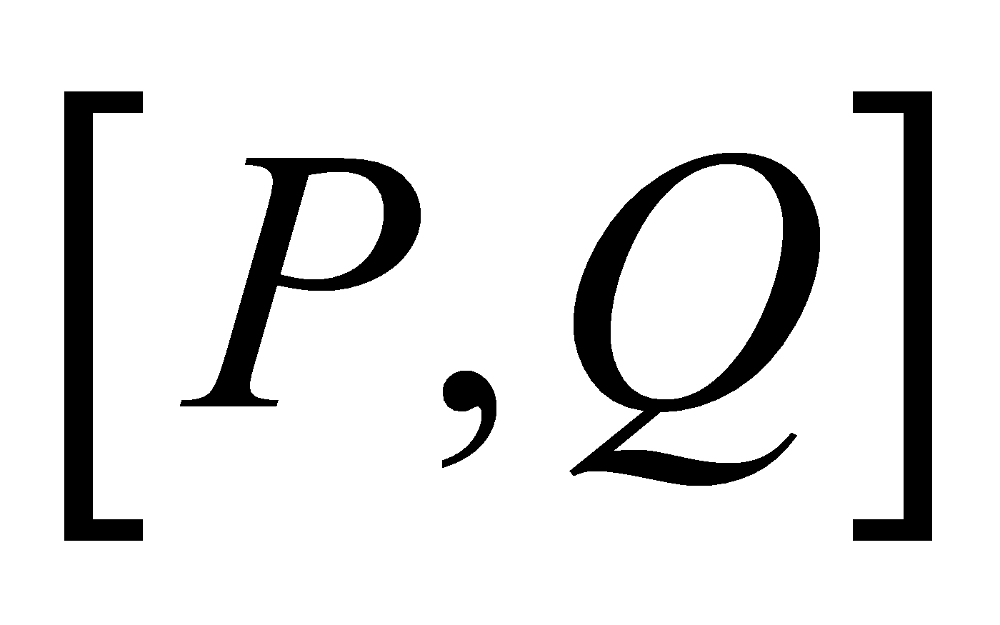
的美好点？22．我们规定：对于数轴上不同的三个点M，N，P，当点M在点N右侧时，若点P到点M的距离恰好为点P到点N的距离的n倍，且n为正整数，（即 ），则称点P是“
），则称点P是“ 关联点”
关联点”
如图，已知在数轴上，原点为O，点A，点B表示的数分别为4， ．
．
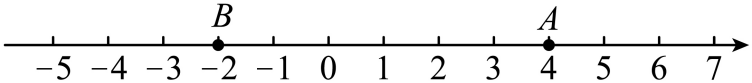
(1)原点O （填“是”或“不是”）“ 关联点”；
关联点”；
(2)若点C是“
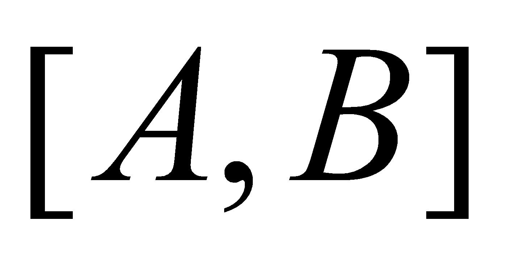
整2关联点”，则点C所表示的数 ；(3)若点A沿数轴向右运动，每秒运动1个单位长度，同时点B沿数轴向左运动，每秒运动2个单位长度，则运动时间为 秒时，原点O恰好是“关联点”，此时n的值为 ．
(4)点Q在A，B之间运动，且不与A，B两点重合，作“
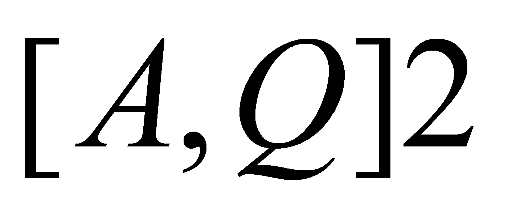
关联点”，记为 ，作“
，作“ 关联点”，记为
关联点”，记为 ，且满足，分别在线段
，且满足，分别在线段 和
和 上．当点Q运动时，若存在整数m，n，使得式子
上．当点Q运动时，若存在整数m，n，使得式子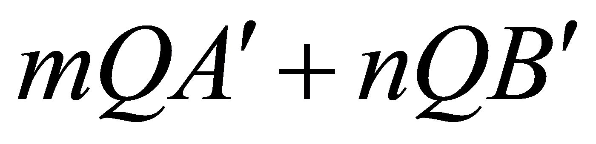
为定值，求出m，n满足的数量关系．23．点C是直线上一动点，当 时，我们称点C是点A与点B的衍生点，记作
时，我们称点C是点A与点B的衍生点，记作
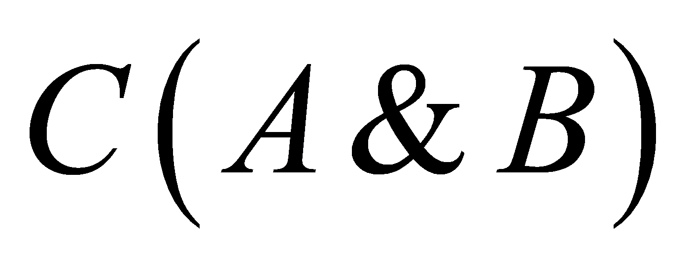
，
【定义理解】
问题（1）若点C在线段上时，A表示 ，B表示6时，则表示的数是 ．
，B表示6时，则表示的数是 ．
【深入研究】
当点C是点A与点B的衍生点时，分别取线段 ，
， 的中点M，N，发现线段
的中点M，N，发现线段 之间存在着一种特殊的数量关系，小明同学觉得若想探寻此问题，需要分两种情况讨论：①点C在线段上时；②点C在线段的延长线上时．
之间存在着一种特殊的数量关系，小明同学觉得若想探寻此问题，需要分两种情况讨论：①点C在线段上时；②点C在线段的延长线上时．
问题（2）请任意选择①，②中的一种情况，画出图形，猜想线段 之间满足的数量关系，并说明理由；
之间满足的数量关系，并说明理由；
【拓展提升】
问题（3）若点C在线段上，线段 ，动点P、Q分别从A、B两端同时出发，点P以
，动点P、Q分别从A、B两端同时出发，点P以 的速度沿向右运动，终点为B，点Q以
的速度沿向右运动，终点为B，点Q以 的速度沿
的速度沿 向左运动，到达A点后立即返回，终点是B．当一个点到达终点，另一个点也随之停止运动，请求出运动多少秒时，点C是点P与点Q的衍生点．
向左运动，到达A点后立即返回，终点是B．当一个点到达终点，另一个点也随之停止运动，请求出运动多少秒时，点C是点P与点Q的衍生点．
24．【概念学习】定义：点，A，B，M为数轴上的任意三点（点 不与A，B重合），若点到点的距离是点到点的距离的
不与A，B重合），若点到点的距离是点到点的距离的 倍，则称点是
倍，则称点是 的值点”，记作：
的值点”，记作： ．例如，点表示的数为1，点表示的数为，点表示的数为3，此时
．例如，点表示的数为1，点表示的数为，点表示的数为3，此时 ，则点是的“2值点”，记作：
，则点是的“2值点”，记作：
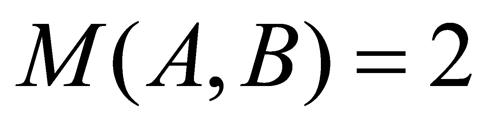
．
【初步认知】
（1）如图，点，点表示的数分别是和6；
①若点C，D，E表示的数分别是 ，，3，则这三个点中是的2值点的点是_____；
，，3，则这三个点中是的2值点的点是_____；
②若点 是数轴上的一点，且
是数轴上的一点，且
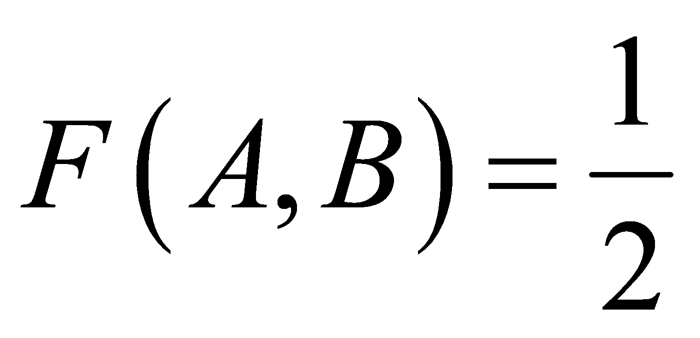
，则点所表示的数是_____．【深入思考】
（2）在数轴上，点 表示的数为
表示的数为 ，点
，点 表示的数为20，从某时刻开始，若点从原点出发向右在数轴上做匀速直线运动，且点的速度为2单位/秒，设运动时间为秒，当
表示的数为20，从某时刻开始，若点从原点出发向右在数轴上做匀速直线运动，且点的速度为2单位/秒，设运动时间为秒，当
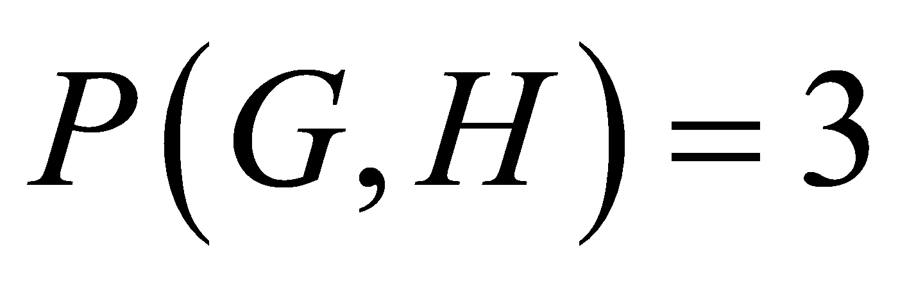
时，请求出的值．【综合运用】
（3）在（1）的条件下，若点 表示的数分别是
表示的数分别是 ，且不与
，且不与 重合，点
重合，点 ，且
，且 ，求点
，求点
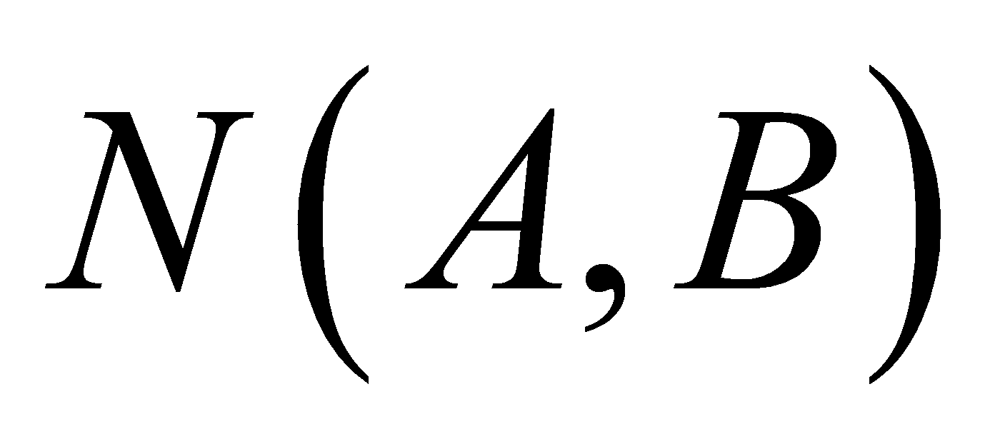
的值（用含 的式子表示）．
的式子表示）．